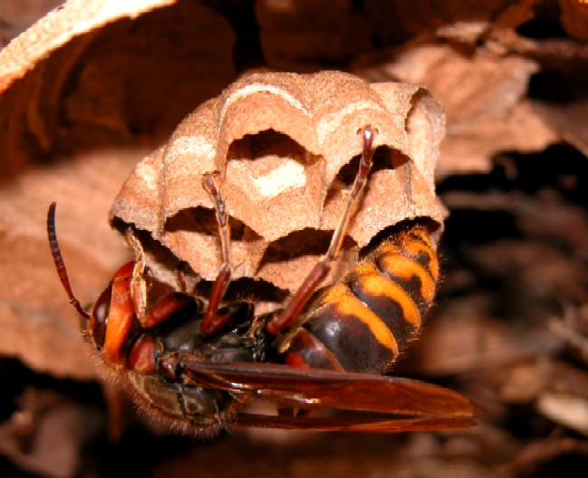
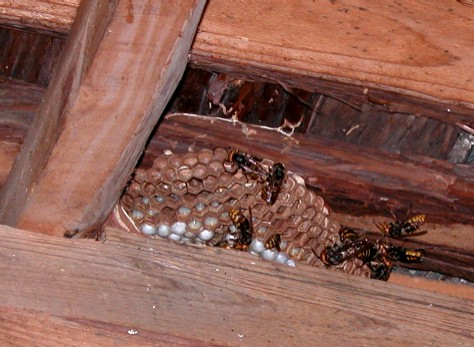
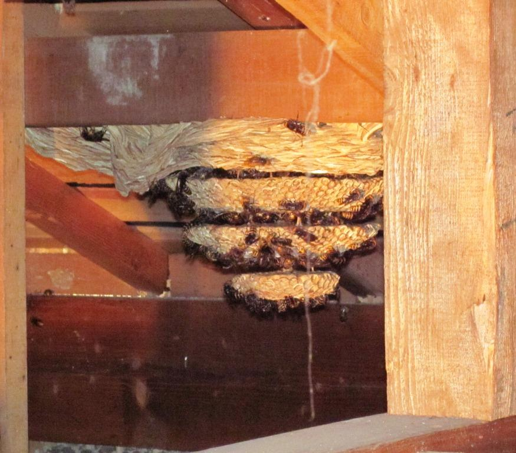

モンスズメバチ
（Vespa crabro flavofasciata Cameron）
・日が暮れた後も活動を続け、夜も働き蜂が巣から出入りをする。
・はじめは屋根裏、壁の中など閉鎖空間に巣を作るが、より広い閉鎖空間へ引越しを行うことがある。
・働き蜂の数は非常に多くなり、攻撃性も高いので刺される被害が絶えない。
モンスズメバチは日本に広範囲に観察されるスズメバチです。女王蜂が5月頃越冬から目覚め、巣作りをはじめ、働き蜂が6月に羽化します。その後、急速に巣は拡張され、9月には雄蜂や新女王蜂が羽化します。
このモンスズメバチの特徴は、夜間も飛行するという事です。
夜、投光器などで明るくし作業を行っているとブンブン飛び回ることがあります。巣が近くにあると夜間の作業中にやってきますので気をつけましょう。
また、夜台所で洗い物などしてると、窓の外からぶつかって来ることもあります。
モンスズメバチには、胸部に黒色で黄または赤褐色の斑紋がありますが、これが大きな特徴でしょう。
以下の巣づくりをしている女王蜂の胸部が判りやすいかと思います。

モンスズメバチの体長は、女王蜂で28～30ｍｍ、働き蜂は21～28ｍｍ、雄蜂で25～28ｍｍほどあります。
モンスズメバチは日本には広く生息していますが、ヨーロッパにも生息していることでも有名で、いろいろな研究報告がされています。
例えば、モンスズメバチの警報フェロモンは1984年に、2-メチル-3-ブテン-2-オール（2-Methyl-3-buten-2-ol）であることが発表されています。

天井付近に営巣するモンスズメバチ モンスズメバチの女王蜂
モンスズメバチの女王蜂
モンスズメバチ
モンスズメバチの巣の特徴は、閉鎖空間に比較的大きな巣を作ることで、木の中の空洞、屋根裏、壁の隙間など隠れたところが好みのようです。
またモンスズメバチもキイロスズメバチ同様、頻繁に引越しを行います。突然巣が作られる場合がありますので注意が必要です。
・スズメバチの引越しにご注意ください！
モンスズメバチの獲物は、他のスズメバチとちょっと違い、セミ類がお好みのようです。なんとモンスズメバチは飛んでいるセミを空中戦で捕まえてしまう事もあるそうです。
すごい運動能力ですね！
セミというのは大きな音を出し、「ミ～ン♪、ミ～ン♪」などとなきますがこの大きな音を出すための筋肉というのが、良質なタンパク質源になっています。
また他のスズメバチ同様、ミツバチやアシナガバチの巣も働き蜂単独で攻撃し、捕まえた成虫を幼虫の餌に持ち帰ります。
このほかにモンスズメバチの働き蜂は、甘い樹液もなめにやってきます。
モンスズメバチの攻撃性は高く、巣に近づいただけで、威嚇されることもあり、危険性が最も高い7月から9月ごろでは、モンスズメバチの巣の付近を通っただけで刺されてしまうこともあります。
巣は外からはほとんど確認できず、木の中など閉鎖空間に巣を作ります。そのため巣の発見が遅れ、草刈りなどの野外作業中に、知らずに巣に近づき刺激し、刺されてしまう事があります。
野外での活動中には気をつけたいスズメバチの一種です。
モンスズメバチが他のスズメバチと大きく異なるのは夜間も活動するという点です。
営巣規模が大きなモンスズメバチは、日が暮れた後、３時間も４時間も活動をしている事が報告されています。
夜作業などを行っている時に、スズメバチが頻繁に飛んでくる際には近くにモンスズメバチの巣があることを疑った方が良いかもしれません。
どうぞお気をつけ下さい。
スズメバチ属(vespa)

天井裏に巣を作ったモンスズメバチ-
生け捕り捕獲など

-
種類や生活史・巣の場所等

-
被害者や対策・対応等

-
すずめばちやについて